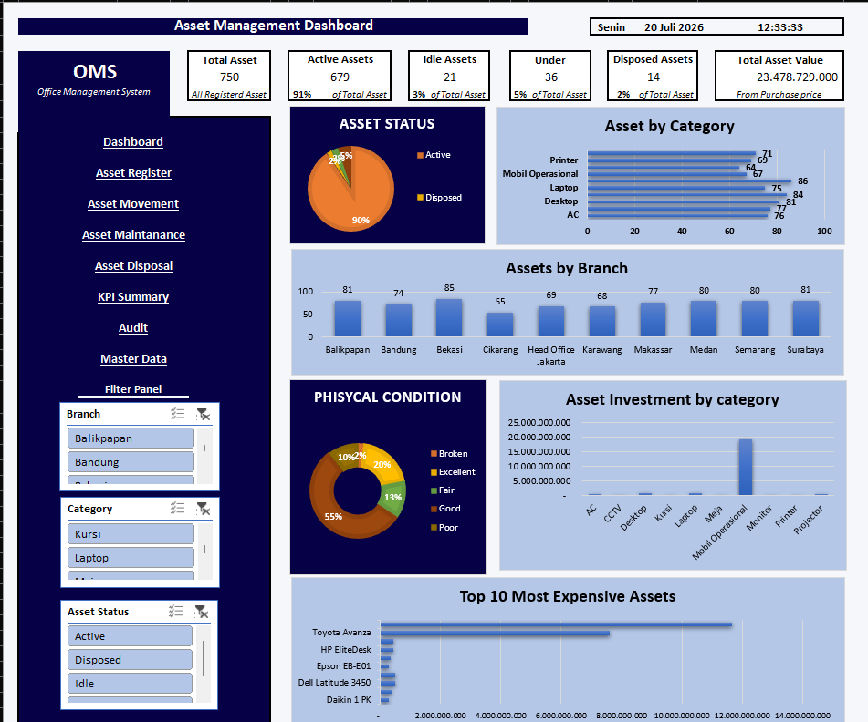

Featured Project · Personal Project
Office Management System (OMS)
Excel-based integrated office management system combining HR Administration, Asset Management, budgeting, audit, KPI, and operational reporting.
View project highlights ↓